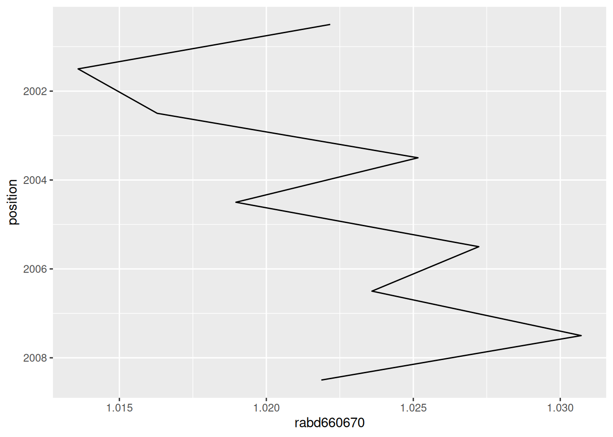
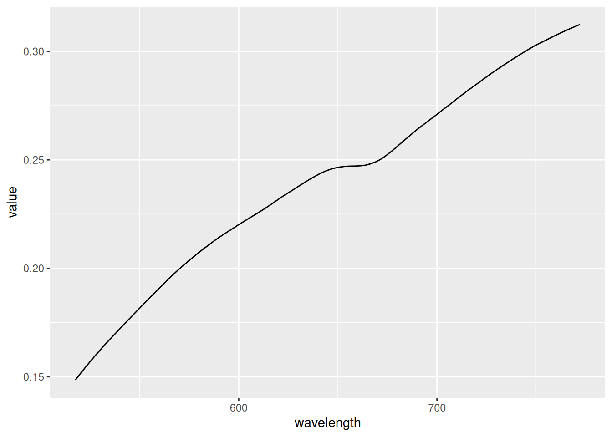

Spectral indices catalogue
HSItools includes a built-in catalogue of spectral indices drawn from the literature. It is a practical starting point for common sediment proxies, not a comprehensive literature review.
# Show tibble
HSItools::spectral_indices
#> proxy_name proxy_type continuum_edges absorption_band index_type
#> 1 rabd510 rabd 590, 730 510 strict
#> 2 rabd615 rabd 590, 730 615 strict
#> 3 rabd615_narrow rabd 590, 640 615 strict
#> 4 rabd640655 rabd 590, 730 640, 655 max
#> 5 rabd660 rabd 590, 730 660 strict
#> 6 rabd660670 rabd 590, 730 660, 670 max
#> 7 rabd845 rabd 790, 900 845 strict
#> 8 rabd16601690 rabd NA NA <NA>
#> 9 raba650700 raba 650, 700 NA x
#> 10 raba600760 raba 600, 760 NA x
#> 11 raba590730 raba 590, 730 NA x
#> 12 raba650750 raba 650, 750 NA x
#> 13 ratio570630 ratio NA NA <NA>
#> 14 ratio590690 ratio NA NA <NA>
#> 15 ratio590640 ratio NA NA <NA>
#> 16 ratio645675 ratio NA NA <NA>
#> 17 ratio660670 ratio NA NA <NA>
#> 18 ratio675750 ratio NA NA <NA>
#> 19 ratio650675 ratio NA NA <NA>
#> 20 ratio850900 ratio NA NA <NA>
#> 21 ratio950970 ratio NA NA <NA>
#> 22 diff675750 difference NA NA <NA>
#> 23 diff650675 difference NA NA <NA>
#> 24 diff660690 difference NA NA <NA>
#> 25 remp remp NA NA <NA>
#> bands search_range interpretation
#> 1 NA NA carotenoids
#> 2 NA NA phycocyanin
#> 3 NA NA albite
#> 4 NA NA total chlorophyll-a
#> 5 NA NA total chlorophyll-a
#> 6 NA NA total chlorophyll-a
#> 7 NA NA bacteriophaeophytin-a
#> 8 NA NA terrestrial aromatic matter
#> 9 NA NA total chlorophyll-a
#> 10 NA NA total chlorophyll-a
#> 11 NA NA total chlorophyll-a
#> 12 NA NA total chlorophyll-a
#> 13 570, 630 NA clay minerals, dust
#> 14 590, 690 NA clay minerals, dust
#> 15 590, 640 NA lithogenic content (illite, chlorite, mica)
#> 16 645, 675 NA clay minerals, dust
#> 17 660, 670 NA degree of photopigment diagenesis
#> 18 675, 750 NA clay minerals, dust
#> 19 650, 675 NA clay minerals, dust
#> 20 850, 900 NA clay minerals, dust
#> 21 950, 970 NA clay minerals, dust
#> 22 675, 750 NA clay minerals, dust
#> 23 650, 675 NA clay minerals, dust
#> 24 660, 690 NA clay minerals, dust
#> 25 NA NA total chlorophyll-a
#> reference
#> 1 <NA>
#> 2 <NA>
#> 3 von Gunten et al. (2012) https://doi.org/10.1007/s10933-012-9582-9
#> 4 <NA>
#> 5 <NA>
#> 6 <NA>
#> 7 <NA>
#> 8 <NA>
#> 9 <NA>
#> 10 <NA>
#> 11 <NA>
#> 12 <NA>
#> 13 <NA>
#> 14 <NA>
#> 15 von Gunten et al. (2012) https://doi.org/10.1007/s10933-012-9582-9
#> 16 <NA>
#> 17 von Gunten et al. (2012) https://doi.org/10.1007/s10933-012-9582-9
#> 18 <NA>
#> 19 <NA>
#> 20 <NA>
#> 21 <NA>
#> 22 <NA>
#> 23 <NA>
#> 24 <NA>
#> 25 Ghanbari et al. (2023) https://doi.org/10.1002/lom3.10576You can filter by proxy_type to see what is available for a given calculation method:
HSItools::spectral_indices |>
dplyr::filter(proxy_type == "rabd")
#> # A tibble: 8 × 9
#> proxy_name proxy_type continuum_edges absorption_band index_type bands
#> <chr> <chr> <list> <list> <chr> <list>
#> 1 rabd510 rabd <dbl [2]> <dbl [1]> strict <lgl [1]>
#> 2 rabd615 rabd <dbl [2]> <dbl [1]> strict <lgl [1]>
#> 3 rabd615_narrow rabd <dbl [2]> <dbl [1]> strict <lgl [1]>
#> 4 rabd640655 rabd <dbl [2]> <dbl [2]> max <lgl [1]>
#> 5 rabd660 rabd <dbl [2]> <dbl [1]> strict <lgl [1]>
#> 6 rabd660670 rabd <dbl [2]> <dbl [2]> max <lgl [1]>
#> 7 rabd845 rabd <dbl [2]> <dbl [1]> strict <lgl [1]>
#> 8 rabd16601690 rabd <lgl [1]> <lgl [1]> <NA> <lgl [1]>
#> # ℹ 3 more variables: search_range <list>, interpretation <chr>,
#> # reference <chr>Calculating spectral indices
Given the known spectral features, we can now calculate our first spectral index of choice. To calculate an index, pass the spectral parameters directly to the corresponding function. We are going to use test reflectance previously processed with hsi_smooth_median() and hsi_smooth_savgol(). We also need a derivative raster.
r <- terra::rast(
system.file(
package = "HSItools",
"testdata/products/SAVGOL_testdata.tif"
)
)Relative Absorption Band Depth
Relative Absorption Band Depth (RABD) is a straightforward type of index, often used for sediment scanning data. Calculate RABD centered around 660 nm to see relative chlorophyll-a abundance.
# A "strict" variant pointing at a given wavelength
rabd660 <- HSItools::hsi_calc_rabd(
r,
continuum_edges = c(590, 730),
absorption_band = 660,
index_type = "strict",
index_name = "rabd660",
filename = tempfile(fileext = ".tif"),
overwrite = TRUE
)
rabd660
#> class : SpatRaster
#> size : 9, 9, 1 (nrow, ncol, nlyr)
#> resolution : 1, 1 (x, y)
#> extent : 1000, 1009, 2000, 2009 (xmin, xmax, ymin, ymax)
#> coord. ref. :
#> source(s) : memory
#> varname : SAVGOL_testdata
#> name : rabd660
#> min value : 1.002019
#> max value : 1.043918
# A "max" variant flexibly selecting wavelength of a minimum reflectance value in a range
rabd660670 <- HSItools::hsi_calc_rabd(
r,
continuum_edges = c(590, 730),
absorption_band = c(660, 670),
index_type = "max",
index_name = "rabd660670",
filename = tempfile(fileext = ".tif"),
overwrite = TRUE
)
rabd660670
#> class : SpatRaster
#> size : 9, 9, 1 (nrow, ncol, nlyr)
#> resolution : 1, 1 (x, y)
#> extent : 1000, 1009, 2000, 2009 (xmin, xmax, ymin, ymax)
#> coord. ref. :
#> source(s) : memory
#> varname : SAVGOL_testdata
#> name : rabd660670
#> min value : 1.002019
#> max value : 1.043918Band Ratio
Band ratio is a simple index where reflectance at band A is divided by reflectance at band B.
ratio660670 <- HSItools::hsi_calc_ratio(
r,
bands = c(660, 670),
index_name = "ratio660670",
filename = tempfile(fileext = ".tif"),
overwrite = TRUE
)
ratio660670
#> class : SpatRaster
#> size : 9, 9, 1 (nrow, ncol, nlyr)
#> resolution : 1, 1 (x, y)
#> extent : 1000, 1009, 2000, 2009 (xmin, xmax, ymin, ymax)
#> coord. ref. :
#> source(s) : memory
#> varname : SAVGOL_testdata
#> name : ratio660670
#> min value : 0.984696
#> max value : 1.002303Band Difference
Band difference subtracts reflectance at band B from reflectance at band A.
diff660690 <- HSItools::hsi_calc_difference(
r,
bands = c(660, 690),
index_name = "diff660690",
filename = tempfile(fileext = ".tif"),
overwrite = TRUE
)
diff660690
#> class : SpatRaster
#> size : 9, 9, 1 (nrow, ncol, nlyr)
#> resolution : 1, 1 (x, y)
#> extent : 1000, 1009, 2000, 2009 (xmin, xmax, ymin, ymax)
#> coord. ref. :
#> source(s) : memory
#> varname : SAVGOL_testdata
#> name : diff660690
#> min value : -0.022675
#> max value : -0.009948Red-Edge Minimum Point
λREMP is an index meant for chlorophyll-a detection proposed by Ghanbari et al. (2023). It uses the first derivative of the spectrum to find exact wavelength where the absorbance near the red edge reaches minimum (zero crossing in derivative space). The wavelength (nm) is the index value. By default we are looking for minimum value (dip) in 660 nm to 680 nm.
remp <- terra::rast(
system.file(
package = "HSItools",
"testdata/products/MEDIAN_testdata.tif"
)
) |>
# Calculate 1st derivative
HSItools::hsi_smooth_savgol(m = 1) |>
# Calculate REMP
HSItools::hsi_calc_remp(
search_range = c(660, 680),
filename = tempfile(fileext = ".tif"),
index_name = "remp",
overwrite = TRUE
)
remp
#> class : SpatRaster
#> size : 9, 9, 1 (nrow, ncol, nlyr)
#> resolution : 1, 1 (x, y)
#> extent : 1000, 1009, 2000, 2009 (xmin, xmax, ymin, ymax)
#> coord. ref. :
#> source : file224a1a01fea7.tif
#> name : remp
#> min value : 661.280029
#> max value : 666.400024Using the catalogue
Instead of typing spectral parameters manually, you can look them up directly from spectral_indices and pass them to the function. This is useful when running multiple indices or when you want to keep your code tied to a single source of truth. Here we recalculate rabd660670 using the catalogue rather than typed parameters. The result is identical.
# Pull the rabd660670 entry
idx <- HSItools::spectral_indices |>
dplyr::filter(proxy_name == "rabd660670")
# Pass parameters to the function
rabd660670 <- HSItools::hsi_calc_rabd(
x = r,
continuum_edges = idx$continuum_edges[[1]],
absorption_band = idx$absorption_band[[1]],
index_type = idx$index_type,
index_name = "rabd660670",
filename = tempfile(fileext = ".tif"),
overwrite = TRUE
)
rabd660670
#> class : SpatRaster
#> size : 9, 9, 1 (nrow, ncol, nlyr)
#> resolution : 1, 1 (x, y)
#> extent : 1000, 1009, 2000, 2009 (xmin, xmax, ymin, ymax)
#> coord. ref. :
#> source(s) : memory
#> varname : SAVGOL_testdata
#> name : rabd660670
#> min value : 1.002019
#> max value : 1.043918Data extraction
Extract index profile
Spatial data is an important foundation of HSI, however, at the end we are often interested in getting a single profile representing an index.
rabd_profile <- rabd660670 |>
HSItools::hsi_extract_profile()
rabd_profile
#> # A tibble: 9 × 2
#> position rabd660670
#> <dbl> <dbl>
#> 1 2008. 1.02
#> 2 2008. 1.03
#> 3 2006. 1.02
#> 4 2006. 1.03
#> 5 2004. 1.02
#> 6 2004. 1.03
#> 7 2002. 1.02
#> 8 2002. 1.01
#> 9 2000. 1.02You can also easilly plot these values with a helper function. These are ggplot2 objects that can be easily modified with +. Please mind, that at this moment we are using the terra pixel space. Spatial calibration is covered in spatial calibration vignette.
The plot function requires the index raster to have a named layer. Pass
index_namewhen calculating to ensure this..
rabd_profile |> HSItools::hsi_plot_profile()
Extract reflectance profile
Reflectance profile in a region of choice is a good diagnostic tool. It can be easilly pulled.
r_profile <- r |>
HSItools::hsi_extract_spectrum()
r_profile
#> # A tibble: 101 × 2
#> wavelength value
#> <dbl> <dbl>
#> 1 518. 0.149
#> 2 520. 0.151
#> 3 523. 0.154
#> 4 525. 0.157
#> 5 528. 0.160
#> 6 530. 0.162
#> 7 532. 0.165
#> 8 535. 0.167
#> 9 537. 0.170
#> 10 540. 0.172
#> # ℹ 91 more rowsYou can also easilly plot these values with a helper function, just like the hsi_extract_profile() output.
r_profile |> HSItools::hsi_plot_spectrum()